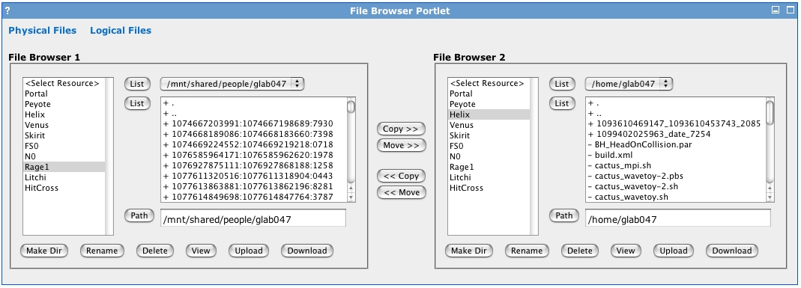

Table of Contents
Grid Portlets extends GridSphere's ActionPortlet with the
ActionComponentPortlet. ActionComponentPortlet
provides a more advanced model for developing and reusing user interfaces, called
action components, represented by the ActionComponent
class. This guide describes the action component model and how to develop new action components.
ActionComponentPortlet is a portlet that contains "action components",
represented by the ActionComponent class. Action components are reusable
JSP user interface components that are contained within an action component frame,
represented by the ActionComponentFrame class, where the top level action component
frame is contained within ActionComponentPortlet. The top level action component
frame displays the JSP of the active action component within that frame. Only one action component can be
active within an action component frame. However, an action component can contain action component frames for
displaying action components within its JSP. In this way, very sophisticated user interfaces can be built.
In Grid Portlets, for example, FileBrowserComp contains two action component frames for
displaying two instances of FileListComp side by side:
<ui:table>
<ui:tablerow>
<!-- File browser 1 -->
<ui:tablecell width="400" align="left" valign="top">
<ui:text><b>File Browser 1</b></ui:text>
<ui:group>
<ui:actioncomponent beanId="fb1"/>
</ui:group>
</ui:tablecell>
<!-- Transfer buttons -->
<ui:tablecell align="center" valign="middle" width="50">
<ui:table>
<ui:tablerow>
<ui:tablecell align="center" valign="middle">
<ui:actionsubmit action="doCopyFilesFb1Fb2" value="Copy >>"/>
<br>
<ui:actionsubmit action="doMoveFilesFb1Fb2" value="Move >>"/>
<br>
</ui:tablecell>
</ui:tablerow>
<ui:tablerow>
<ui:tablecell align="center" valign="middle">
<br>
<ui:actionsubmit action="doCopyFilesFb2Fb1" value="<< Copy"/>
<br>
<ui:actionsubmit action="doMoveFilesFb2Fb1" value="<< Move"/>
</ui:tablecell>
</ui:tablerow>
</ui:table>
</ui:tablecell>
<!-- File browser 2 -->
<ui:tablecell align="left" valign="top">
<ui:text><b>File Browser 2</b></ui:text>
<ui:group>
<ui:actioncomponent beanId="fb2"/>
</ui:group>
</ui:tablecell>
</ui:tablerow>
</ui:table>
resulting in the following HTML:

Like ActionPortlet in GridSphere, ActionComponentPortlet
provides a natural way to deal with portlet actions. Each action component is assigned a unique
component id. When an action component is rendered, the bean id for all tag beans
that are contained within the action component are prefixed with this unique component id. The result
is that each input field in the rendered HTML is uniquely identified, associated with the action
component they originate from by this component id prefix. This is discussed in more detail in the
Action Component section below.
Since each action component has its own scope within JSP and the rendered HTML, there is no need to
specify form tags within JSP (except when file input forms are required). Instead,
ActionComponentPortlet renders one form tag at the top level.
When a user clicks on an action submit button or action link, the current values of the input fields
in the rendered HTML are applied to the corresponding tag beans of all the action components
currently displayed. Then the resulting portlet action is mapped to a method on the action component
class and this method is invoked. For all other action components displayed in the HTML, the
doRender method is invoked.
By default, this means the current values of the action component will simply
be displayed. This process is described in more detail in the Action Component Life Cycle section.
Like ActionPortlet in GridSphere, ActionComponentPortlet
provides a natural way for dealing with control, through the
setNextState method of ActionComponent. By default,
an action component will set the next state of its parent action component frame to its
defalt jsp page after its action method
is invoked. However, this can be overridden inside the body of an action method. An action component
can set the next state of its parent frame to an action method of another action component. That
action component then becomes the active component within the parent frame, and so on, until the
state the parent frame is set to a jsp page to display. Action components can also pass control up
to the action component frame with by specifying action links, described
in more detail later in this guide.
When an action component portlet is constructed for the first time, it registers the
appropriate default action component to load for each portlet mode.
In Grid Portlets, for example, FileBrowserPortlet,
sets its portlet VIEW mode default action component to FileBrowserComp.
Thus, when FileBrowserPortlet is viewed for the first time in
a user session, it sets the next state of its top level action component frame to
the default action method of FileBrowserComp.
public class FileBrowserPortlet extends ActionComponentPortlet {
private transient static PortletLog log = SportletLog.getInstance(FileBrowserPortlet.class);
public void init(PortletConfig config) throws PortletException {
super.init(config);
setViewModeComp(FileBrowserComp.class);
}
}
Action components are objects that are responsbile for generating some JSP to display within the context of an action component portlet. Action components have a default action method, a render action method (set to null by default), and a default jsp page to display after any action method invoked. Action components can contain tag beans which are arragned for display in JSP. Among these tag beans, an action component can contain action component frames for displaying action components within its JSP.
Action components are created with ActionComponentFactory,
a portlet service that gets deployed with each web application. Because, action components
are JSP based, and because JSP files are only accessible within a particular servlet context,
an ActionComponentFactory is deployed with each web application,
where it can use the servlet context to get access to the web files and action
component classes deployed with the web application.
Grid Portlets registers action components and to which web application they belong with
/WEB-INF/ActionComponentTypes.xml, located in each web application.
This file contains action-component-type entries, which specify an
application component class and other properties associated with that class, such as
what its default action method is, its default jsp file, and so on. These entries get
marshaled into an ActionComponentType. Each web application
ActionComponentFactory then registers these types with the Grid
Portlets ActionComponentFactory at startup, which acts as
a sort of broker for instantiating all the action component classes.
An action component is created only once per action component frame per user session, with the
ActionComponent(ActionComponentFrame frame, String compId) method.
The constructor method is where creation of tag beans usually occurs, illustrated in examples
later in this guide. Also, in the constructor the default action method, render action method, and
jsp page can be set, though it is generally best to specify these attributes in the
action component type entries in /WEB-INF/ActionComponentTypes.xml.
An action component portlet contains a tree of action component frames
and components. When ActionComponentPortlet processes a
portlet request, it retrieves its top level action component for the current
user session. If the portlet request does not contain an action,
then the top level frame retrieves its active component and calls its
doRender method. doRender
will invoke the active component's default action if this is the first
time it is being displayed. If the component has been displayed before, then
it calls its render action method if it is not null, otherwise it will display
the appropriate jsp page.
If the portlet request contains an action, then a check is performed to see if the action string is mapped to the action method of an action component other than the active component (see Action Links below). If not, it checks to see if the action string maps to a method on the active component or to the method of an action component contained at a deeper level in the tree.
The action string represents a nested level of calls like so:
<actionPortletId>%actionCompFrameId>%<actionCompId>%[<actionMethod>|%<actionCompFrameId>%<actionCompId>%[...]]
Thus, if the action string maps to a method on the active component, it invokes that
components doAction. Otherwise, it passes the action string
onto the doAction of the action component frame referred to
in the string. Finally, the doRender method of all the
other action component frames contained in the active component contains is called,
which results the doRender of its active component and so
on. This logic is repeated until the action string bottoms out to a final method call.
How actions map to methods on action components is discussed in more detail in the
Action Methods section below.
When doAction(String action, Map parameters) on
ActionComponentFrame is called, the following events occur:
The active action component for the action component frame is retrieved from
ActionComponentFactory.
The onInit() method is invoked each time an instance of
an action component is retrieved from ActionComponentFactory.
Override this method whenever additional initialization is needed, such as getting
handles to portlet services.
The onLoad() method is invoked after an action component
has been loaded from a request. This will update the values of the tab beans contained
in the action component with the values of input fields retreived from the portlet
request through its request paraemters. Override this method whenever some additional
preprocessing is necessary before the action invokation phase. For example, if a value
from the request should be translated to another value or handled in some particular
way for every action, then that logic should be performed here.
The action string is handled in the manner described earlier.
The onStore() method is invoked after an action component
has been stored to a request. Override this method whenever some additional
postprocessing is necessary after the action method phase. For example, if some value
should be stored to the request so that it is available in JSP for every action method,
it is best to put that logic here.
When doRender on ActionComponentFrame
is called, the following events occur:
The active action component is retrieved from
ActionComponentFactory.
The onInit() method is invoked each time an instance of
an action component is retrieved from ActionComponentFactory.
Override this method whenever additional initialization is needed, such as getting
handles to portlet services.
The onLoad() method is invoked after an action component
has been loaded from a request. This will update the values of the tab beans contained
in the action component with the values of input fields retreived from the portlet
request through its request paraemters. Override this method whenever some additional
preprocessing is necessary before the action invokation phase. For example, if a value
from the request should be translated to another value or handled in some particular
way for every action, then that logic should be performed here.
doRender(String action, Map parameters) on the active
component is called.
The onStore() method is invoked after an action component
has been stored to a request. Override this method whenever some additional
postprocessing is necessary after the action method phase. For example, if some value
should be stored to the request so that it is available in JSP for every action method,
it is best to put that logic here.
In the action component model, portlet actions originating from an action submit button or an action link get mapped to methods on the corresponding action component class. These actions take the form:
<actionMethodName>(Map parameters)
where the parameters argument contains the action parameters
that were specified in the action. For example, if in JSP we have an action link tag:
<ui:actionlink action="doMyAction1" value="An Action Link">
<ui:actionparam name="actionParam1" value="actionValue1"/>
<ui:actionparam name="actionParam2" value="actionValue2"/>
</ui:actionlink>
then when a user clicks on the hyperlink displayed by the action link tag,
the action will be mapped to:
doMyAction1(Map parameters)
on the corresponding action component, and the parameters specified above
will be accessible in the parameters argument:
String actionParam1 = parameters.get("actionParam1");
String actionParam2 = parameters.get("actionParam2");
Similarly, if in JSP we have an action submit tag:
<ui:actionsubmit action="doMyAction2" value="An Action Link">
<ui:actionparam name="actionParam1" value="actionValue1"/>
<ui:actionparam name="actionParam2" value="actionValue2"/>
</ui:actionsubmit>
which displays a button, then when a user clicks on that button the action will
be mapped to:
doMyAction2(Map parameters)
on the corresponding action component, and the parameters specified above
will be accessible in the parameters argument.
Action components can map portlet strings to the action methods of other other
components. This is achieved with the registerActionLink method.
This method is used to map an action received by one component to that of another. This
is useful, in particular, with the ui:actionlink tag and it is
not necessary to handle the action in the active component.
Let's say you display a list of items in a table with an action component called
ListItemsComp and when a user selects one of those items to view,
you want to view the item with ViewItemComp. So, in the JSP for
ListItemsComp you might have:
<% List itemList = ActionComponent.getPageAttribute(request, "itemList", new ArrayList());
Iterator itemIter = itemList.iterator(); %>
<ui:table>
<ui:tr header="true">
<ui:td>
<ui:text value="ID"/>
<ui:td>
<ui:td>
<ui:text value="Attribute 1"/>
<ui:td>
<ui:td>
<ui:text value="Attribute 2"/>
<ui:td>
</ui:tr>
<% while (itemIter.hasNext()) { %>
MyItem item = (MyItem)itemIter.next();
String itemId = item.getId();
String attribute1 = item.getAttribute1();
String attribute2 = item.getAttribute2(); %>
<ui:tr>
<ui:td>
<ui:actionlink action="doViewItem" value="<%=itemId%>">
<ui:actionparam name="itemId" value="<%=itemId%>"/>
</ui:actionlink>
<ui:td>
<ui:td>
<ui:text value="<%=attribute1%>"/>
<ui:td>
<ui:td>
<ui:text value="<%=attribute2%>"/>
<ui:td>
</ui:tr>
<% } %>
</ui:table>
In ListItemsComp you would setup an action link for the
doViewItem action like so:
public class ListItemsComp extends ActionComponent {
// Other member variables...
public ListItemsComp(ActionComponentFrame container, String compName)
throws PortletException {
// Call our super method...
super(container, compName);
// Register our action link. Forwards "doViewItem" method to ViewItemComp
registerActionLink(getClass(), "doViewItem", ViewItemComp.class);
// More code...
}
Now, the parent frame to ListItemsComp will know to
invoke the "doViewItem" method on ViewItemComp when
ListItemsComp is the active component and it receives
an action string with "doViewItem" as the value.
As discussed earlier, action components can contain other action
components within action component frames. An initial state for
each child action component frame can be set in the constructor
method or the onInit method of each action
component. In the FileBrowserComp, for example,
we contain two instances of FileListComp like so:
public class FileBrowserComp extends FileComp {
// Other member variables...
// Frame for file "browser" 1
protected ActionComponentFrame fileBrowser1Bean = null;
// Frame for file "browser" 2
protected ActionComponentFrame fileBrowser2Bean = null;
// Other member variables...
public FileBrowserComp(ActionComponentFrame container, String compName)
throws PortletException {
// Call our super method...
super(container, compName);
// File browser 1
fileBrowser1Bean = createActionComponentFrame("fb1");
fileBrowser1Bean.setNextState(FileListComp.class, DEFAULT_ACTION);
// File browser 2
fileBrowser2Bean = createActionComponentFrame("fb2");
fileBrowser2Bean.setNextState(FileListComp.class, DEFAULT_ACTION);
// More code...
// Default jsp page
setDefaultJspPage("/jsp/file/FileBrowserComp.jsp");
}
GridSphere provides an action component tag for displaying
action component frames in JSP. So, in order to display
file browser 1 for the code above, in the
JSP file /jsp/file/FileBrowserComp.jsp we use
the action component tag like so:
<ui:actioncomponent beanId="fb1"/>
Action dialogs are modal components, components that assume control of the top level action
component frame. They are created with the getActionDialog
method of ActionComponent. Once opened with
showOkCancelDialog, for example, they remain the active component
in the top-level action component frame until either the doOk method
of the action dialog is called and it results in the closeDialog being
called, or the doCancel is called. In both cases, the action component that
creates the dialog must specify the next state to forward control to once the dialog
closes. This is best illustrated with an example.
FileListComp will open a
FileMakeDirDialog when its doMakeDir
action method like so:
FileMakeDirDialog dialog
= (FileMakeDirDialog)getActionDialog(FileMakeDirDialog.class);
dialog.setFileHost(fileHostName);
dialog.setFilePath(currentPathField.getValue());
dialog.setMessageValue(getResourceString(MAKEDIR_MESSAGE_KEY));
dialog.showOkCancelDialog(new ActionComponentState(getClass(), "doMakeDirApply"),
new ActionComponentState(getClass(), RENDER_ACTION));
FileListComp specifies to invoke to its
doMakeDir method when the user clicks on "OK" on the
the file make dir dialog and to invoke its render action when the user clicks
cancel instead.
Action components are registed with /WEB-INF/ActionComponentTypes.xml
inside each web application. This file contains multiple action-component-type
entries which describe the action components contained in each web application.
<action-component-types>
<action-component-type
classname="YourActionComponentClass"
default-action="TheFirstActionToPerform"
render-action="AnActionToPerformInDoRender"
default-jsp="TheDefeaultJspPageToDisplay"/>
<!-- Specify as many action-component-type entries as you want -->
</action-component-types>
Developing an action component portlet amounts to extending ActionComponentPortlet
and extending ActionComponent for each action component you wish
to develop. Once the necessary classes have been implemented, then you specify your portlet
entry in /WEB-INF/portlet.xml and your action components in
/WEB-INF/ActionComponentTypes.xml. The required steps are
summarized below:
Create a Grid portlet project. Grid Portlets offers two ant targets for doing so:
To create a new project from scratch, run ant new-project and
follow its instructions. This is similar to the new-project target in GridSphere.
It will create a new portlet project in the projects directory
of GridSphere that includes support for developing new action components.
To modify an existing portlet project to support development of action components and
job profiles, run ant update-project and
follow its instructions. This is similar to the update-project target in GridSphere.
It will update an existing portlet project in the projects directory
of GridSphere with the latest project files from GridSpehre and Grid Portlets.
Implement your action components, extending from ActionComponent.
Specify the action component classes you developed in
/WEB-INF/ActionComponentTypes.xml.
Extend ActionComponentPortlet. Inside the init
method of your portlet, set the default action components to display for each portlet mode
your portlet supports:
public class MyComponentPortlet extends ActionComponentPortlet {
public void init(PortletConfig config) throws PortletException {
super.init(config);
setViewModeComp(MyViewModeComp.class);
setEditModeComp(MyEditModeComp.class);
setHelpModeComp(MyHelpModeComp.class);
}
}
Specify the portlet you developed in /WEB-INF/portlet.xml.
Once you've completed your work, simply redeploy your web application and restart your webserver if necessary.